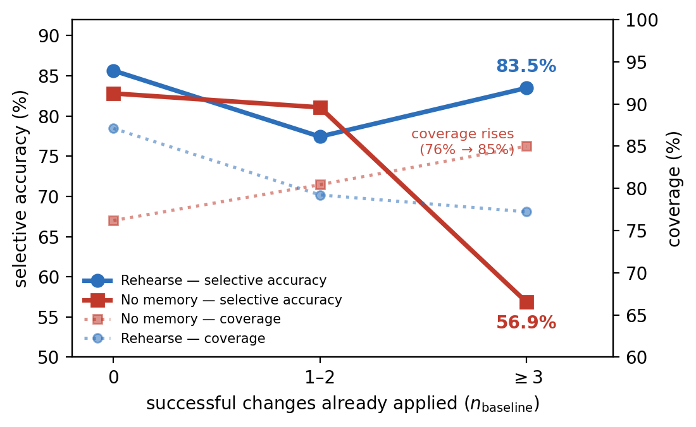
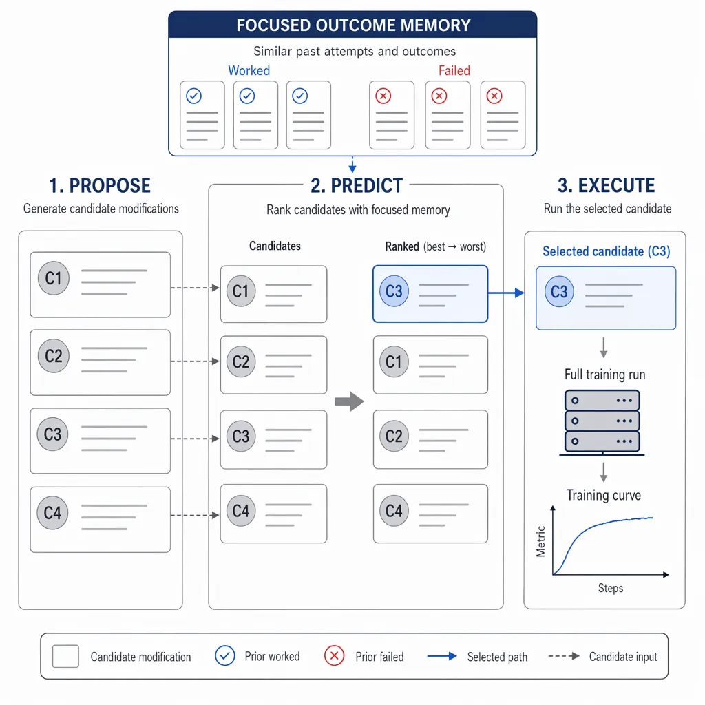

Rehearse: The Confidence Cliff — Why Autoresearch Judgment Decays and How Focused Memory Restores It
TL;DR
- "Rehearse: Stepping Back from the Confidence Cliff in Self-Improving Autoresearch" (arXiv 2607.27687; Jiazhen Ji, Shouhong Ding) documents a failure law of autoresearch loops: in public AutoSOTA logs, the fraction of helpful code modifications falls from 70% in the first two iterations to 43% by iteration 6+ (mean gain 3.6% → 0.3%), and on a 366-pair benchmark the LLM judge's selective accuracy collapses 25.9 points (to 56.9%) once three or more successful changes have accumulated — while its willingness to issue verdicts rises. That combination — worse judgment, undiminished confidence — is the confidence cliff.
- The capability isn't missing, it's drowned: given outcome-blind rationales and no prior-attempt history, judges reach 79.5% accuracy on worked-vs-didn't pairs. What degrades late-loop judgment is how accumulated history is presented.
- Rehearse is a small loop change — propose several modifications, predict the best via pairwise strict-consensus judging against a focused outcome memory (same-task attempts above a similarity threshold, stored as change + binary outcome only), execute just the top candidate, write the result back. Cliff-bucket selective accuracy recovers to 83.5%, and across 4,000 budgeted training runs (nanochat, CIFAR-10, ETTh1) endpoints improve under identical budgets — e.g., ETTh1 MSE reduction 40.1% → 54.0%.
Why this matters
Every self-improving loop in this tracker — AREX, Frontis-MA1's OpenMLE, the autoresearch methodology posts, our own overnight-ML-experiment skills — has the same silent dependency: an LLM deciding which idea to try next and whether the last change helped. The scaling assumption is that this judgment holds steady while the loop runs. Rehearse is the first paper we've tracked to measure that assumption directly over loop depth, and it fails in the worst possible way: not by the judge abstaining more (which would be safe), but by the judge staying equally decisive as its accuracy falls off a cliff. In selective-prediction terms, coverage holds (even rises, 76% → 85%) while selective accuracy collapses — the textbook signature of miscalibration.
The diagnosis matters more than the number. It would be easy to conclude "LLM judges can't evaluate research ideas after a few iterations" — but the outcome-blind probe shows ~79.5% accuracy is available when the pair is presented cleanly without the loop's accumulated baggage. The decay is an artifact of context: as successful changes pile up, the naive presentation of history biases the judge toward more-of-the-same confidence rather than discrimination. That reframes the fix from "bigger judge model" to "context engineering for the judge" — which is exactly what Rehearse's focused memory is. For anyone building autoresearch or agentic RL loops where a judge gates execution (including everything in the Frontis-MA1/OpenMLE mold), this is a cheap, portable defect-and-repair pair.
The core idea
The measurement apparatus comes first, and it's the paper's backbone. From 39 paper-derived AutoSOTA tasks the authors build a 366-pair benchmark: 296 type-1 pairs (same baseline state, one modification worked, one didn't) and 70 type-2 pairs (both worked; the larger gain wins). Candidates are presented as outcome-blind rationales — hypothesis and implementation, stripped of any measured results — so the judge must predict, not read off, success.
Judging uses strict consensus: each pair is judged twice in opposite presentation orders; a verdict counts only if the two orders agree, otherwise the judge abstains on that pair. Two quantities follow (notation reconstructed from the paper's selective-prediction definitions):
Stratifying by \(n_{\mathrm{baseline}}\) — the number of successful changes already applied to the state a pair sits on — produces Figure 1: without memory, SelAcc drops 25.9 points at \(n_{\mathrm{baseline}}\ge 3\) while coverage climbs. That regime is the confidence cliff.

Figure 1 from the paper: pre-execution judgment on the 366-pair benchmark, by number of accumulated successes. The dangerous pattern is the red pair of lines: accuracy falls as willingness to decide rises.
Rehearse then restructures the loop from one-idea-then-run to Propose–Predict–Execute. Three design choices carry it:
- Propose many, run one. Several candidate modifications are generated; a pairwise tournament under strict consensus ranks them (an agreed verdict gives the winner one vote; disagreement gives neither a vote); only the top-ranked candidate (k=1) is executed. Judgment is spent before compute.
- Focused outcome memory. A store \(\mathcal{M}\) records each executed attempt as the change and its binary outcome — no failure narratives, no diffs. At judging time, retrieval is restricted to attempts from the same task whose embedding similarity to the candidate passes a threshold: candidates are embedded with all-MiniLM-L6-v2 (384-dim, L2-normalized, so dot product = cosine), and only records with similarity ≥ 0.40 are shown as precedent.
- Write-back. The executed candidate's result enters \(\mathcal{M}\) regardless of success, so the precedent base grows with the loop rather than with the (much sparser) sequence of accepted changes.
How it works

Figure 2 from the paper: Rehearse adds the Predict step and the outcome store to an otherwise standard autoresearch loop.
# Rehearse: the Propose-Predict-Execute loop (Algorithm 1, condensed)
M <- {} ; s_0 <- baseline state (code + config + metric)
while compute budget remains at step t:
C <- Propose(s_t) # multiple candidate modifications
# Predict: pairwise tournament under strict consensus
for each unordered pair (c_i, c_j) in C:
judge twice (both presentation orders), with retrieved precedent
P(c) = { m in M : same task, cos(e(c), e(m)) >= 0.40 }
agreed verdict -> 1 vote to winner ; disagreement -> no votes
c* <- highest-vote candidate # k = 1: only the top idea runs
apply c* to a copy of s_t; run training -> result r
M <- M ∪ { (change(c*), outcome(r)) } # binary outcome only
if r improves the metric: commit; s_{t+1} <- improved state
else: discard; s_{t+1} <- s_t
# with Predict and M removed, this is a vanilla autoresearch loop
Everything else about the loop — proposer, executor, acceptance rule — is standard, which is the point: the intervention is confined to what the judge sees and when it is consulted. Note what the memory deliberately omits: retrieval spans only the same task (no cross-task transfer), and records carry no rationale for why something failed. The ablations (Table 2) show this austerity is a feature — showing fuller history in the late regime is precisely what re-creates the cliff.
Results
- The cliff, quantified (366 pairs; judges hy3-preview, glm-5.1, deepseek-v4; single-turn numbers are means over the three judges): no-memory judging scores 77.6% overall SelAcc, but in the cliff bucket (\(n_{\mathrm{baseline}}\ge 3\)) falls to 56.9% at 85% coverage — barely better than coin-flipping, delivered with high confidence.
- Judgment is recoverable: on type-1 (worked vs. didn't) pairs presented outcome-blind without history, judges reach 79.5%; with Rehearse's focused retrieval this rises to 84.2%. In the cliff bucket, Rehearse restores SelAcc to 83.5% (from 56.9%) at 77% coverage — it recovers accuracy and abstains a bit more, the calibrated direction. Overall SelAcc: 77.6% → 82.3%.
- Live loops (100 experiments per run, 5 seeds each, ~4,000 budgeted training runs total): on nanochat (hy3-preview), best-so-far improvement over baseline reaches 7.1% (vanilla) / 8.4% (selection without memory) / 10.7% (Rehearse). On CIFAR-10 (glm-5.1): 2.10% → 2.85% accuracy gain, with Rehearse reaching vanilla's endpoint after 54 of 100 experiments. On ETTh1 time-series forecasting (deepseek-v4): MSE reduction 40.1% → 54.0%, matching vanilla's final level after 63 experiments. Per-seed, Rehearse ends ahead on 9 of 10 runs on the two additional loops.
- Ablation shape: propose-many alone tracks vanilla (ideas aren't the bottleneck); selection without memory front-loads progress but converges similarly; the focused store is what moves the endpoint. Judgment quality, not proposal quality, is the binding constraint late in the loop.
How it connects
- [Frontis-MA1] (merged into the tracker today) scales exactly the loop Rehearse diagnoses — draft, refine, recombine ML solutions with scores feeding back into training and search. Its cross-task experience and asynchronous search added +10.6 points; Rehearse suggests a complementary axis: those gains sit on top of a judge whose late-loop reliability nobody is measuring.
- [AREX] and [autoresearch Methodology in Practice] both gate execution on model judgment of candidate ideas; the confidence cliff is a direct threat model for them, and the \(n_{\mathrm{baseline}}\)-stratified selective accuracy plot is a diagnostic either could adopt tomorrow.
- [Self-Reflection Loops Do Not Beat Repeated Sampling at Matched Token Cost] (added today) is the single-turn rhyme: all 18 negative comparisons there involve models inspecting their own output. Rehearse's multi-turn version: models judging their own improvement trajectory degrade as that trajectory accumulates — and in both cases the failure is invisible because the model stays confident.
- [SkillHone] and [MSCE] persist decision history and skills across episodes; Rehearse's focused outcome store is the minimal cousin — change + binary outcome, same-task, similarity-gated — and its ablations argue that less history, better targeted, beats more.
- [Co-Evolving Evaluation Criteria] and [Self-Improving Agents Should Evolve Their Benchmarks] address judgment drift by changing what is evaluated; Rehearse addresses it by changing what the evaluator remembers. The two are orthogonal and likely stack.
Critical take
The measurement contribution is stronger than the method. The 366-pair benchmark with outcome-blind rationales and order-symmetrized strict consensus is careful work, and the coverage-vs-selective-accuracy decomposition is exactly the right lens — but the pairs are mined from AutoSOTA logs, so "modification worked" is entangled with everything else in those runs (noisy training, seed variance near the 0.3%-mean-gain regime), and type-2 pairs (70) are thin. The method itself is three sensible defaults wearing a name: propose-many, judge-pairwise, remember-outcomes. Its austerity raises questions the paper doesn't close: why does binary outcome memory beat richer records — is it genuinely better signal, or is it compensating for judges that can't handle long evidence (the same context pathology in another costume)? The 0.40 similarity threshold and same-task restriction are asserted rather than swept in the main text, and all-MiniLM-L6-v2 is a very small embedder to bet retrieval on. The live loops are small (nanochat, CIFAR-10, ETTh1 — not frontier-scale autoresearch), the loop model and judge model are the same endpoint per domain (self-judging, with vendor-alias endpoints the authors themselves flag as non-frozen checkpoints), and k=1 execution means the entire propose-many benefit is laundered through the judge — precisely the component shown to be fragile. And a quieter caveat: Rehearse's coverage in the cliff bucket drops to 77%, so part of the recovery is bought with abstention; the paper counts that as calibration, but a loop that abstains still has to do something with its budget. What survives all this comfortably: the confidence cliff itself is real, cheap to measure in any judged loop, and the fact that late-loop judgment failure is a presentation problem rather than a capability ceiling is genuinely good news for everyone betting on autoresearch.
If you remember three things
- Judgment, not ideation, is what decays in self-improving loops: helpful modifications fall from 70% to 43% by iteration 6+ in AutoSOTA logs, and judge selective accuracy collapses 25.9 points once ≥3 successes accumulate — while verdict rates rise. Confidence outlives competence.
- The capability survives; the context kills it: outcome-blind, history-free presentation recovers ~79.5% accuracy on the same decisions. Judge reliability in loops is a context-engineering problem.
- The repair is minimal: propose several, execute only the pairwise-consensus winner, and give the judge a focused memory — same-task precedents (cosine ≥ 0.40) stored as change + binary outcome. Cliff accuracy 56.9% → 83.5%; ETTh1 endpoint 40.1% → 54.0% MSE reduction under the same budget.